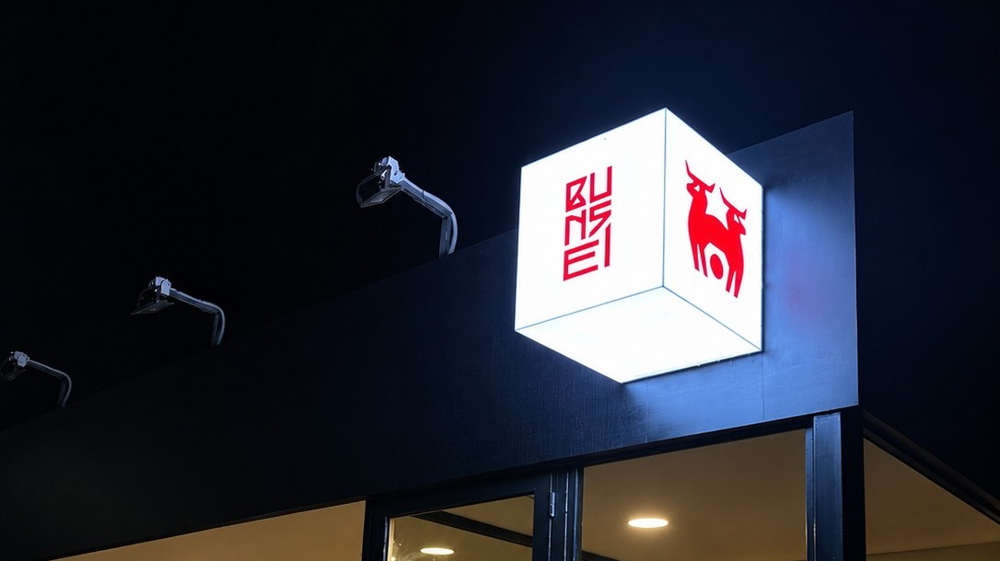
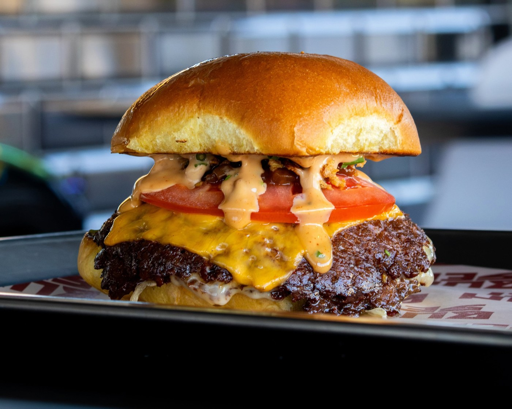
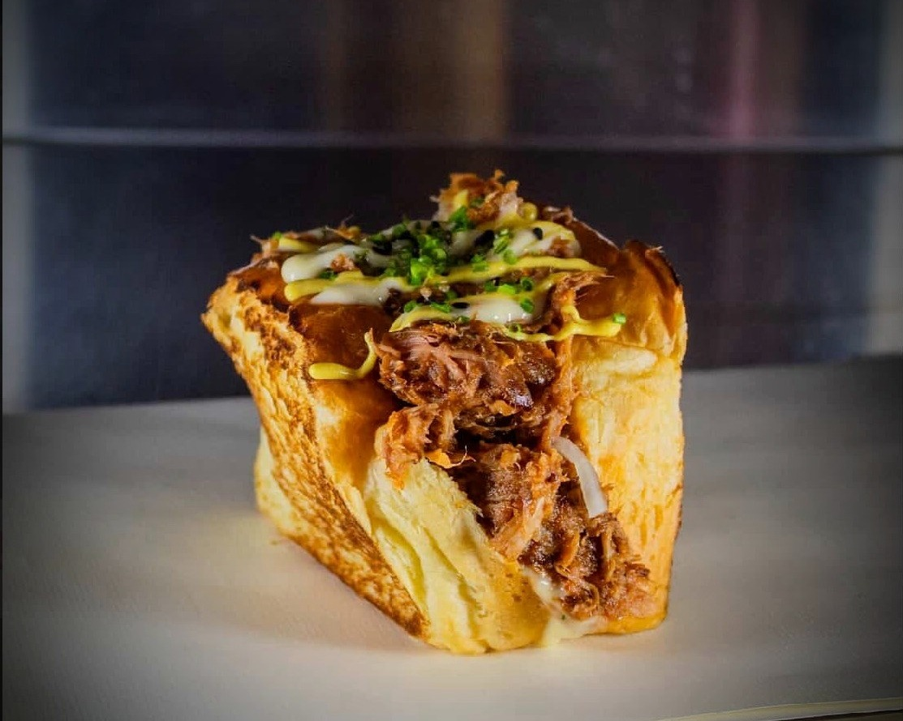
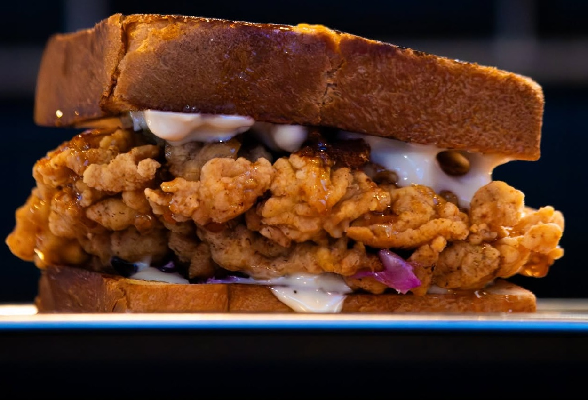

トリュフバーガー
Truffle Burger
Smashed beef, cheese taken well past the point of politeness, truffle folded through the sauce. The pull in the photographs is this one.
Dali, Cyprus / 第一話
A Japanese-inspired burger counter. Smashed patties, buns pressed soft, sauces built like broths — reduced, layered, tasted flat and tasted again. Half six until ten, five nights a week.

二
Sandwiches on the board
18:30
Doors, five nights a week
火〜土
Tuesday to Saturday
零
Things we can't explain
お品書き → read right to left
A short board is a decision, not a limitation. Both of these have been cooked several hundred times before they reached you. Takeaway from the counter, or eat where you stand.

01 ジュウウトリュフバーガー
Smashed beef, cheese taken well past the point of politeness, truffle folded through the sauce. The pull in the photographs is this one.

02 ホロップルドポークサンド
Shoulder cooked long, pulled coarse, glazed sweet-savoury and stacked high in slices of Japanese inspired milk-bread. Sharp pickle to cut it.
Next episode / 次回予告
カリカリ唐揚げ
Karaage, double-fried and loud about it, in a sandwich. Landing on the board shortly.

丁寧に作る
Bunsei began with an argument about depth. A burger can be enormous and still taste of very little; a bowl of dashi can be almost clear and taste of everything. We wanted the second thing in the shape of the first.
So the sauces are reduced and layered until they read savoury all the way through, and the buns are pressed soft enough to give way in one hand. Nothing on the board is there for decoration.
Umami. Nothing less.
旨味
Umami / The Fifth Taste
Identified in 1908 by chemist Kikunae Ikeda, who isolated glutamate from kombu broth and gave savouriness a name of its own — the taste that sits under sweet, sour, salty and bitter, the reason a good dashi tastes like more than salt water.
At Bunsei it isn't a garnish, it's the method: sauces reduced until they carry weight alone, cheese pushed past where most kitchens stop, broths built the patient way dashi is built. Every sandwich on the board is umami approached from a different direction.
Hours / 営業時間
| Tuesday – Saturday | 18:30 – 22:00 |
| Sunday – Monday | Closed |
Takeaway from the counter — no bookings
ガブッ
Tuesday to Saturday, 18:30 until 22:00 or until the board is done.